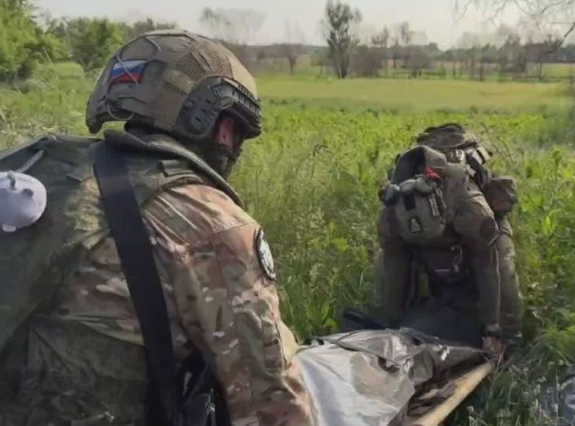
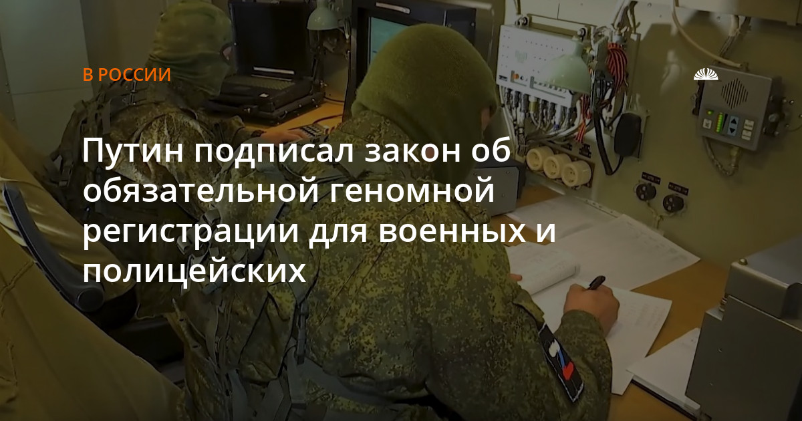

Эвакуация тел погибших военнослужащих: как проходит процедура
← К архивуДата:

Во время боевых действий одной из наиболее сложных и чувствительных тем остается эвакуация тел погибших военнослужащих. Вокруг этой процедуры регулярно возникают слухи и дезинформация. В социальных сетях и мессенджерах нередко распространяются сообщения о «списках эвакуации», предложениях посредников или различных «поисковых группах». Однако реальная процедура организована иначе и регулируется исключительно государственными структурами.
В российской системе военного управления эвакуация погибших относится к задачам воинских подразделений и специальных групп обеспечения. Все действия проводятся в рамках установленного порядка Министерства обороны и зависят прежде всего от обстановки на конкретном участке боевых действий.
Кто занимается эвакуацией
Эвакуацией тел погибших с линии боевых действий занимается исключительно Министерство обороны Российской Федерации. Никакие частные организации, волонтерские объединения, фонды или Telegram-каналы не имеют полномочий проводить такие операции и не обладают доступом к соответствующим базам данных или каналам управления.
Решение о проведении эвакуации принимает командование подразделений, исходя из тактической обстановки. Учитываются интенсивность боевых действий, угроза для эвакуационной группы, возможность безопасного выхода к месту гибели и наличие сил и средств для проведения операции.
Почему эвакуация может занимать время
Линия боевого соприкосновения часто находится под постоянным огневым воздействием. Используются артиллерия, минометы, беспилотные аппараты и другие средства поражения. В таких условиях проведение эвакуационных мероприятий может быть крайне опасным.
Поэтому командование всегда исходит из приоритета сохранения жизни военнослужащих, выполняющих эвакуацию. Даже если известно место гибели бойца, доступ к нему может быть временно невозможен. В таких случаях эвакуация проводится позже, когда обстановка позволяет сделать это безопаснее.
Существуют ли «списки эвакуации»
Одним из распространенных заблуждений является существование так называемых «списков эвакуации тел». На практике подобных списков не существует. Эвакуационные группы работают по конкретному участку местности и действуют исходя из реальной обстановки на поле боя.
При возможности забираются все обнаруженные тела независимо от того, известны ли данные погибших и передавалась ли информация о них заранее. Поэтому любые предложения «включить бойца в список эвакуации» не имеют юридической или практической основы.
Что происходит после эвакуации
После эвакуации тела погибших доставляются в специализированные учреждения, где проводится процедура идентификации. Она может включать визуальное опознание, анализ документов и личных вещей, свидетельские показания сослуживцев, а также генетическую экспертизу.
Генетическая идентификация проводится в рамках государственной геномной регистрации. Соответствующие процедуры регулируются федеральным законом «О государственной геномной регистрации». В случаях, когда визуальное опознание невозможно, именно ДНК-экспертиза позволяет установить личность погибшего.

Почему важно не передавать данные третьим лицам
В сети периодически появляются группы и каналы, предлагающие «помощь в поиске», «включение в списки эвакуации» или сбор персональных данных военнослужащих. Такие предложения не имеют юридической силы и могут быть связаны с мошенничеством или сбором информации.
Передача персональных данных бойцов и их родственников неизвестным лицам может создавать риски утечки информации и использоваться в недобросовестных целях. Все официальные процедуры розыска и идентификации проводятся исключительно через государственные структуры.
Куда обращаться родственникам
Если военнослужащий длительное время не выходит на связь или считается пропавшим без вести, родственникам рекомендуется обращаться только через официальные государственные органы. Основными каналами взаимодействия являются воинская часть, военный комиссариат, Министерство обороны и Следственный комитет Российской Федерации.
Именно через эти структуры осуществляется работа по розыску военнослужащих, оформлению документов и информированию родственников о результатах расследования.
Полезные ссылки
Для обращения в государственные органы можно использовать официальные электронные приемные.
Президент Российской Федерации -
letters.kremlin.ru/letters/send
Министерство обороны РФ -
letters.mil.ru/electronic_reception.htm
Главная военная прокуратура -
gvp.gov.ru/gvp/reception/go
Военный следственный комитет -
gvsu.gov.ru/appeals-from-citizens/
Уполномоченный по правам человека в РФ -
ombudsmanrf.org/appeal
Депутат Государственной Думы Шамсаил Саралиев -
saraliev.com/обратная-связь/
Международный комитет Красного Креста -
icrc.org/ru/rodstvennik-propal-ukraina
Обращение через официальные каналы позволяет фиксировать запросы документально и получать информацию в рамках установленного законом порядка.